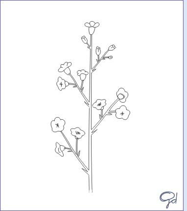
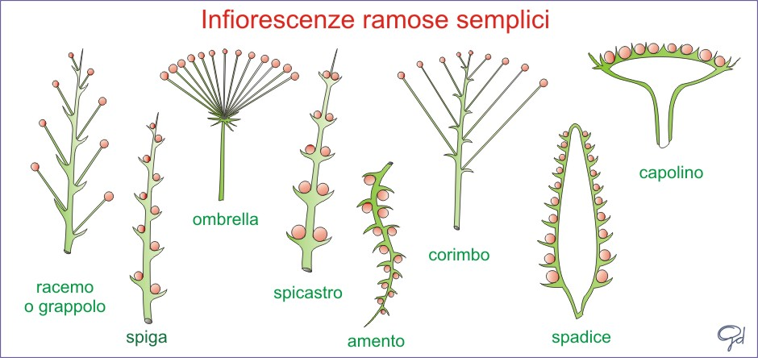
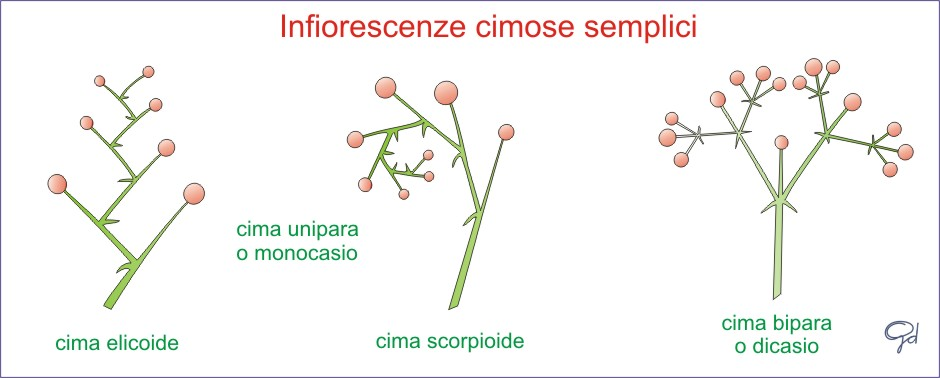
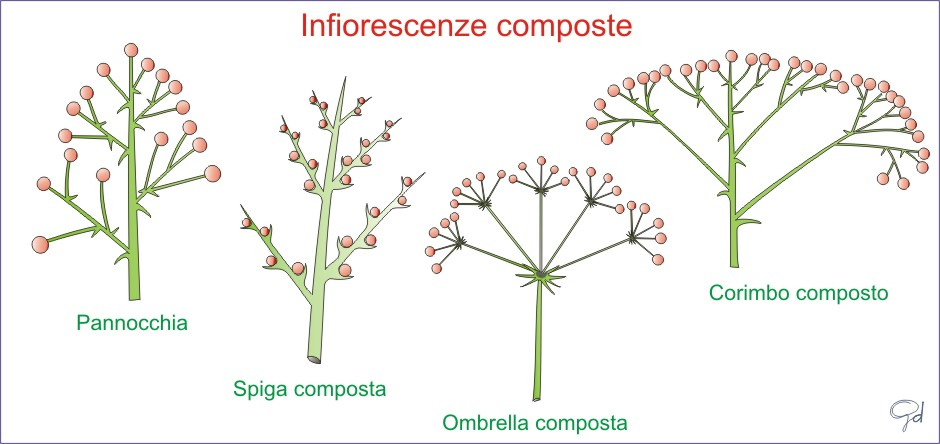

|
Le Infiorescenze
La parte floreale di una pianta può essere composta da un unico fiore oppure da un'insieme di infiorescenze che si diramano da un unico peduncolo.
Le infiorescenze sono diverse: grappoli, ombrelle, corimbri, cime, capolini ed a volte sono miste.
Si dividono in due gruppi principali: le racemose o indefinite, e le cimose o definite; e possono essere semplici o composte.
Le Infiorescenze racemose semplici
il racemo o grappolo è un'infiorescenza formata da un asse principale che si allunga e forma, lateralmente e a intervalli regolari, fiori peduncolati; generalmente non porta fiori terminali.
l'ombrella è formata da un asse principale dal quale si diramano radialmente peduncoli di uguale lunghezza chiamati raggi, con fiori disposti a ombrella.;
il corimbo è una falsa ombrella, dall'asse principale i peduncoli fiorali partono in posizioni diverse ma sono di differenti lunghezze in modo che i fiori siano disposti tutti alla stessa altezza;
il capolino, è formato da tanti piccoli fiori raccolti in un ingrossamento del peduncolo detto ricettacolo.
la spiga, simile al racemo, ma con fiori sessili;
l'amento è una spiga particolare in cui l'asse principale è flessibile
la spadice, altro caso di spiga in cui l'asse è carnoso e accompagnato a volte da una grande brattea, detta "spata".

Le Infiorescenze cimose semplici
Sono le infiorescenze in cui l'asse principale come i rami laterali hanno un accrescimento limitato alla produzione di un fiore.
Si ramificano in modo simpodiale secondo questi tipi principali:
cima unipara o monocasio , quando si forma, sotto l'asse principale terminante con un fiore, un solo ramo laterale, che produce a sua volta un fiore e qui arresta la crescita; contemporaneamente si produce, sotto l'asse di secondo ordine, un altro ramo e così via;
cima scorpioide, se i rami si formano tutti sul medesimo lato
cima elicoide, se i rami seguono l'uno all'altro in modo alterno.

Le Infiorescenze composte
I tipi principali di infiorescenze composte sono:
la pannocchia (o grappolo o racemo composto), in cui si inseriscono lungo l'asse principale, invece di singoli pedicelli fiorali, assi laterali ramificati a racemo;
l'antela, simile alla pannocchia ma con rami più lunghi dell'asse che lo regge;
la cima ombrelliforme o ombrella composta, simile a un'ombrella dove i raggi sono costituiti da grappoli;
il corimbotirso o corimbo composto, ossia un corimbo di corimbi.

|